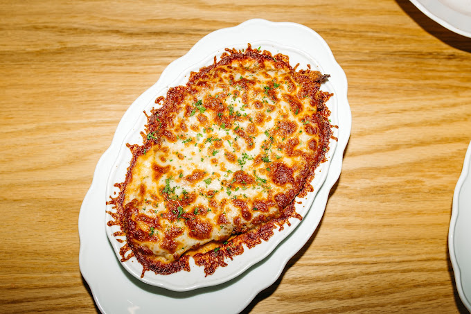

Chicken Parm

Why you'll want to make Chicken Parm
I love chicken parm.
I would say that I have loved it my whole life but that would be a lie, because I just discovered it.
Just meaning two years ago. But since than I had an unhealthy amount of burnt tongues and scratched palates.
But I never look back.
Because this dish is absolutely worth it.
Even on the next day.
Doesn't even matter if it's cold and directly out of the fridge or carefully reheated in a fresh tablespoon of italian olive oil.
Chicken Parm is your friend.
Chicken Parm cares.
Chicken Parm understands.
Chicken Parm will always be there for you.
The Recipe
Ingredients
Sauce
- 1/2 onion, chopped
- 4 garlic cloves
- Oil
- 3 Tbs tomato paste
- 1 tsp red chili flakes
- 800g can tomatoes
- 1/2 tbs oregano
- Handful fresh basil
- 250ml water
- Salt
- Pepper
Chicken
- 4 chicken breasts
- 4 eggs
- 405 wheat flour
- Pepper
- 1 tsp garlic powder
- 1/2 tbs oregano
- 1/2 tbs dried basil
- Panko breadcrumbs
- 250g mozzarella
- Parmesan
Other Ingredients
- 500g pasta
- Fresh basil leafs
- Parmesan
- 50g butter
Instructions
- In a saute pan, saute 1/2 chopped onion for 3 minutes before adding the garlic cloves and saute for 30 seconds before adding 3 tablespoons of tomato paste and a shake of red chili flakes.
Saute for 1 minute.
- Add in the 800g of canned tomatoes, stir in and crush the tomatoes up and place over medium heat.
Bring up to a simmer then lowering the heat to maintain a bare bubble.
- Add 1/2 tbs dried oregano, a couple of stems of fresh basil and 250ml water.
Stir to combine and let simmer for 45 minutes.
(Now is a good time to start with the chicken).
- Taste for seasoning adding in salt and freshly ground black pepper as needed.
Fish out any basil stems and set aside keeping warm until ready to serve.
- Butterfly 4 large chicken breasts on your cutting board.
Lay a layer of plastic wrap over the chicken and pound the breasts out.
Be careful not to tear them apart.
- Salt and pepper before setting aside on a baking sheet while preparing the breading station.
- For breading, crack 4 eggs along with a sprinkle of 405 wheat flour in one bowl (beat together), 405 wheat flour with freshly ground black pepper and 1 tsp of garlic powder, 1/2 tbs dried oregano and 1/2 tbs dried basil whisked together in another bowl, and spread panko bread crumbs crumbs on a rimmed baking sheet with a sprinkle of parmesan cheese.
- Dip the chicken breasts into the flour then egg before covering every inch with panko breadcrumbs.
- Set the breadcrumbs coated chicken aside until ready to fry. (Now is good time to start boiling water for pasta).
- Heat a quart of peanut oil to 175°C, drop in the chicken and fry for roughly 5 minutes or deeply golden brown.
Drain on paper towels once finished.
- Place the chicken onto a wire rack in a rimmed baking sheet and top with fresh basil, slices of fresh mozzarella, and freshly grated parmesan cheese.
Place in the broiler for just a few minutes until the cheese is melted and slightly golden brown.
- Place a few generous ladles full of pasta sauce in the saucepan over medium heat.
- Once the pasta is a minute shy of doneness and the sauce is bubbling, add in the pasta along with 1/4 cup of pasta water.
Stir to combine and cook until done.
- Once the pasta is done cooking, kill the heat and add in freshly chopped basil, freshly shaved parmesan, and 50g of butter.
Mix until combined.
- Add the pasta to a plate topped with the fried chicken.
Top the chicken with a few spoons full of pasta sauce, grated parmesan cheese, and fresh chopped basil.
Enjoy.